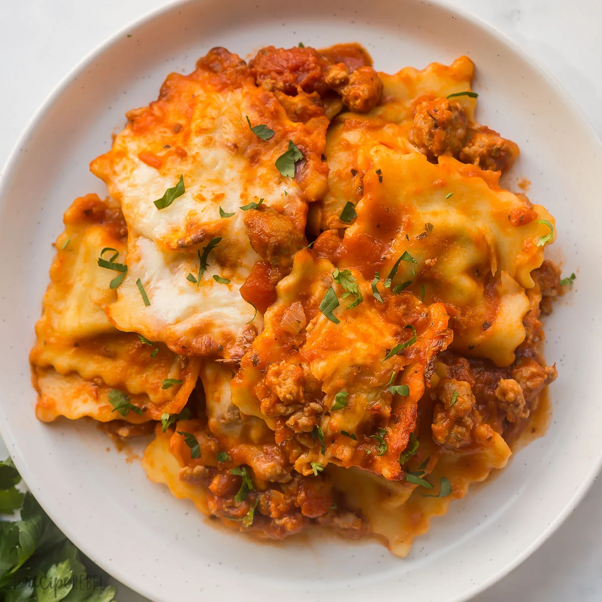

Ravioli
Description
This Baked Ravioli is an easy, kid-approved dinner that takes just 10 minutes to prep! Cheese ravioli is tossed with pasta sauce and Italian sausage, topped with parmesan and mozzarella and baked to cheesy perfection.
Ingredients
- Italian Sausage: you can use mild or spicy Italian sausage depending on your preference!
- Onion: diced to incorporate well into the Italian sausage.
- Marinara or Tomato Pasta Sauce: I usually just use jarred sauce to keep this recipe simple but if you have a favorite homemade pasta sauce you can absolutely use that.
- Minced Garlic: I keep a jar of pre-minced garlic in my fridge for convenience, but you can use freshly minced garlic or even finely chopped garlic.
- Italian Seasoning: pasta sauce and Italian sausage are already well seasoned, but I love to add extra Italian seasoning to give even more flavor.
- Ravioli: I usually use fresh cheese ravioli, but you can use whatever your favorite ravioli is!
- Mozzarella and Parmesan Cheese: melted over top the pasta bake to add so much cheesy gooey-ness.
- Fresh Basil: for garnish, if desired!
Steps
- Make the sauce: In a large skillet, cook the Italian sausage and onion until the sausage is browned.
- Mix in tomato sauce, garlic, and Italian seasoning, then simmer while you cook the ravioli.
- Cook the ravioli: Bring a pot of salted water to a boil, add in the ravioli, then cook until al dente.
- Remember to reserve some of the pasta water before you drain it! We add it to the sauce to keep it, well, saucy! Otherwise this baked pasta can become quite thick in the oven.
- Assemble and bake: Add the cooked ravioli and sauce to a lightly greased 9×13″ baking dish and toss lightly to coat. Top with mozzarella and parmesan, then bake for 15 minutes.
- Serve: Top with fresh basil, then serve and enjoy!
